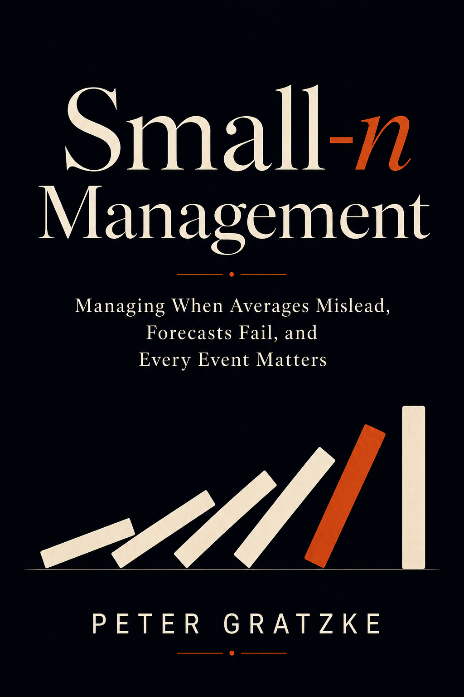

Copyright © 2026 Peter Gratzke. All rights reserved.
No part of this publication may be reproduced or distributed without permission, except for brief quotations used in reviews or commentary.
This book is provided for general informational purposes and does not constitute legal, financial, or professional advice.
First edition, 2026.
This book was born out of a single monthly business review.
I was leading a small, specialized team inside a major technology company. Our job was to support the company's most strategic and complex deals. Like every team in a data-obsessed culture, we measured everything. Our performance was tracked on a dashboard of metrics, reviewed by senior leadership every month.
In this particular meeting, a senior leader pointed to a bright red number on the screen. "Your month-over-month performance in Germany dipped 94%," he said. "We need to understand what went wrong."
The number was correct, but the conclusion was not. What went "wrong" was nothing. My team in Germany was responsible for just four massive, company-defining deals per year. If one of those deals closed in March and none happened to close in April, the metric would, of course, show a catastrophic drop. The number was mathematically accurate but factually meaningless. It was a data point of one, masquerading as a trend.
In that moment, I realized I was living in a different universe from the executives on the call. They were managing with the law of large numbers, where statistics tell a reliable story. I was managing with the law of small numbers, where a single event can create seismic-level variance and statistics mislead.
This realization sent me searching for a playbook. I went to the business section of the bookstore, looking for guides on how to manage in a high-stakes, low-volume world. I found nothing. Most of the management advice I found assumes you have the protection of averages. This book assumes you don't.
My world (and likely your world) has none of that protection. It's a world where every person is essential, every decision is critical, and every mistake has an outsized impact. It's a world where one person's mood can change the energy of the entire team, and where losing a single client can feel like an extinction-level event.
This book is the playbook for that world. It is not about how to act like a smaller version of a big company. It is about how to operate effectively when the standard toolkit fails you: when averages mislead, forecasts fail, and one event can reshape everything. It provides a new language to describe your environment and a practical operating system for navigating it.
A note on examples: this book draws on three kinds of material. Some examples come from my direct operating experience; details have been changed but the situations are real. Some are composites, patterns I have seen repeated across teams and companies, assembled into a single illustrative scenario. And some are hypothetical math examples used to demonstrate a statistical or probabilistic point. Where a story reads like a case study, it is a composite unless stated otherwise. The patterns are real; the specific characters are not.
There are two fundamentally different worlds of management, and the tools that make you successful in one can fail in the other. The dividing line isn't industry, business model, or company stage. It's something far more fundamental: sample size.
When your critical denominators are large (hundreds of customers, thousands of users, dozens of suppliers) the world becomes predictable. Variance smooths out. Averages stabilize. Aggregate rates become decision-grade. You can A/B test, forecast, optimize, and manage by dashboard.
When your critical denominators are small (four major customers, twelve enterprise deals, three key relationships) the world operates under different physics. Variance dominates. Averages become unreliable. Aggregate rates stop being decision-grade. Every event becomes system-sized, every mistake compounds, every decision carries significant weight.
This isn't a difference in difficulty. It's a difference in kind. And most leaders are operating across both worlds simultaneously without realizing they need completely different playbooks for each.
Most managers have been handed a large-number toolkit for a small-number world. They feel data-driven and rigorous. They're using everything business school taught them. But science requires matching your methods to your environment. Until you can identify which world you're in and toggle between approaches, you're applying the wrong framework to at least half your decisions.
The cost of that mismatch shows up everywhere. Startups spend their last six months of runway on A/B tests that will never reach statistical significance. Executives approve major investments from three high-variance data points. Product teams explain 40% quarterly swings as performance changes when the movement is mostly arithmetic. Customer success teams build churn models on a few dozen customers when the real issue is that one champion is about to leave. The danger is not that leaders ignore data. The danger is that they use data in forms their environment cannot support.
To see the mismatch clearly, start with the two worlds these tools were built for.
Large-n: The World of Predictability
A consumer bank with 4 million checking accounts sees 12,000 customers close accounts last month, a churn rate of 0.3%. This month, 11,800 left. Next month will probably be 11,000 to 13,000. The operations team doesn't know which customers will leave, but they know how many with remarkable precision.
This predictability emerges from the law of large numbers. Flip a coin ten times, you might get seven heads. Flip it ten thousand times, you'll get very close to 5,000 heads. Individual flips remain random, but the aggregate becomes reliable.
Large-n environments enable the entire toolkit of modern management: A/B testing, Six Sigma, dashboard KPIs, machine learning models. Business schools teach this world almost exclusively. The implicit promise: collect enough data, and you can manage anything. The promise is real, if you actually have enough data.
Small-n: The World of Discrete Events
You run customer success for an enterprise team with four customers. Last Tuesday, your largest customer, accounting for 40% of revenue, didn't renew. The champion who'd bought your vision, Jennifer, left six months earlier. Her replacement, David, a newly installed CFO who wanted to consolidate vendors, didn't return your calls. Despite quarterly business reviews, executive alignment meetings, and a substantial discount offer, the customer churned.
At the board meeting, the slide shows 25% quarterly churn. One director frowns. "That churn number puts us far outside the benchmarks. Best-in-class enterprise SaaS companies hold annual churn to five to seven percent. What's driving this?"
The question misses the point entirely. It wasn't a churn rate in any meaningful sense. There was Jennifer who left, and David who didn't care about your category. Large SaaS firms with 400 customers can analyze patterns, run retention models, and build playbooks because no single departure defines the picture. With four customers, you manage four specific relationships with named humans at named companies. Losing one isn't 25% churn. It's losing Jennifer.
This is small-n: a world where individual events dominate, variance overwhelms signal, and averages become unreliable. At small-n, your dashboard doesn't show the business. It shows the math of tiny denominators pretending to be trends.
The shift from large-n to small-n is not a binary switch from "data" to "intuition." It's a shift in which methods produce decision-grade information. And the distinction doesn't apply to whole organizations. Amazon has hundreds of millions of customers (pure large-n for retail operations) but its relationship with antitrust regulators is small-n. One DOJ lawsuit could reshape the company. The question is never "which mode am I in?" It's "which mode does this specific decision require?"
The first diagnostic mistake is counting the wrong thing.
Your company may have 500 employees, but if one regulatory approval determines whether the product can launch, your relevant n for that decision is one. You may have 10,000 users, but if 80% of revenue depends on six enterprise renewals, your renewal-risk n is six. Small-n is not about the size of the organization. It is about the denominator attached to the decision.
To find the right denominator, ask three questions:
What outcome am I trying to reason about? Not "how is the business doing" in general, but the specific outcome: retention risk, revenue forecast, hiring success, operational resilience.
What are the independent or semi-independent units that produce that outcome? These are the things you'd need to count to build a meaningful rate or average.
Are those units comparable enough that aggregating them preserves meaning? If each unit has fundamentally different characteristics (different deal sizes, different risk profiles, different decision-makers), aggregating them into a single rate destroys more information than it creates.
Examples:
Count the denominator for the decision, not the denominator that makes you feel bigger.
Small-n risk is driven by three distinct forces. They often appear together, but they are not the same problem and they require different responses.
Thin Count: You have too few observations for rates or averages to stabilize.
With 1,200 customers and a 10% churn rate, your 95% confidence interval sits comfortably between 8.3% and 11.7%. Shrink to 12 customers with the same underlying churn, and that band widens dramatically to anywhere from near zero to over 35%. The confidence interval is now wider than the entire range of plausible outcomes. With four customers, one departure moves your rate by 25%. You're not watching business trends. You're watching variance amplified by tiny denominators. Thin count makes measurement noisy.
Thin count also creates a binary rhythm. If you average four major product launches per year, the most likely outcome for any given quarter is zero or one, each with about 37% probability. Long quiet periods and sudden clusters aren't anomalies. They're the expected pattern. With one qualified engineer, one approved vendor, or one compliant platform, work runs in single lanes. When that lane blocks, everything waits. Outcomes become binary: pass or fail.
Concentration: One unit carries a disproportionate share of the outcome.
With four customers, one loss eliminates 25% of revenue. With three critical suppliers, one disruption removes a third of capacity. Individual shocks don't fade into background noise. They define the background.
Economists measure this with the Herfindahl-Hirschman Index (HHI), which captures how concentrated your risk is. With 100 evenly distributed customers, you get an HHI of 0.01 (highly diversified). With just four customers, even perfectly distributed, you hit 0.25. On the standard 0-10,000 HHI scale used in federal merger guidelines, markets above 1,800 are considered "highly concentrated"; normalized to 0-1, that threshold is 0.18. Four equal customers blow past that threshold. You didn't choose this concentration. The denominator chose it for you.
But raw count doesn't tell the whole story. Twelve customers where one represents 40% of revenue has an HHI of 0.19, while twelve equal customers has an HHI of 0.08. Both have n=12. Concentration makes individual events consequential. Losing your largest customer isn't a data point. It's a structural shift.
Coupling: Units that appear independent fail together.
Your three "independent" suppliers all ship through the same port. Your two "redundant" payment processors both depend on the same upstream bank. Five enterprise deals that all depend on the same CFO's budget approval. What looks like diversification is actually shared exposure. What you thought was three independent risks is actually one risk wearing three masks. Coupling makes apparent diversification fake.
These forces compound, but they are not identical. A business can have thin count without concentration (ten equal customers), concentration without coupling (one whale customer whose risk is genuinely independent), or coupling without thin count (fifty suppliers that all depend on the same shipping lane). Each combination requires a different response:
Combining the denominator test with the three forces produces a practical diagnostic. For any domain, evaluate four dimensions:
Then match the score to a response:
0-1 factors present: Use standard metrics but monitor uncertainty bands. Dashboard rates are likely decision-grade, but check for hidden concentration or coupling before trusting them completely.
2 factors present: Treat aggregate rates as suspect. Supplement dashboards with event logs, scenario ranges, and named-unit analysis. This is the transitional zone where large-n tools work partially but need causal context.
3-4 factors present: Operate in full small-n mode. Prioritize resilience, redundancy, and survival-sized bets. Manage named units, not rates. Prepare scenarios, not forecasts. Build slack, not efficiency.
The Rule of 30 remains a useful starting heuristic, since below roughly 30 observations many standard statistical approximations become fragile. But it's the starting point of the diagnosis, not the whole picture. A business with 50 customers where one is 60% of revenue scores high on concentration and should operate in small-n mode despite having n > 30.
Once the diagnosis is small-n, the next mistake is to abandon rigor. The point is not to stop using numbers. It is to use forms of reasoning that preserve uncertainty, causation, and named-unit detail.
Statistics do not stop working at small-n. Bad statistical habits stop working.
The mistake in small-n environments is not that you use judgment. It is that you hide judgment inside numbers.
You have four enterprise customers and you talk about churn rate. You run two pilots and you talk about market pricing. You evaluate three finalists and you build a scorecard. You have six meaningful deals and you forecast to the decimal point. Each move feels like rigor. Each turns thin evidence into arithmetic. Each creates the appearance of stability without creating more information.
This is the core problem of small-n reasoning. When the denominator is thin, the large-n reflex is to force the situation into forms that look measurable: averages, percentages, weighted scores, conversion rates, blended forecasts, trend lines. The numbers are not fake. The danger is subtler. The numbers quietly imply a level of repeatability, comparability, and precision that the underlying situation does not support.
In large-n settings, the central tendency earns the right to dominate the story. Noise cancels. Rates stabilize. One transaction resembles another. Aggregate patterns become decision-grade.
In small-n settings, the reverse is often true. Identity matters more than average. Mechanism matters more than frequency. A single event can tell you more than a quarter's worth of summary metrics. One customer is not one draw from a large population; it is a strategically distinct unit with its own sponsor, dependency chain, switching costs, political risks, and timing. One new hire is not one datapoint in a broad talent funnel; it is the person carrying an entire function. One pilot price is not one observation; it is an interaction between your offer, that buyer's urgency, the political budget owner, the alternatives visible at that moment, and your own sales posture.
The implication is not that rigor becomes impossible. It is that rigor changes form.
You do not stop reasoning quantitatively. You stop pretending the problem is more statistically settled than it is. You do not abandon judgment. You expose it, structure it, test it, and update it. You do not demand certainty before acting. You learn how to move with explicit uncertainty.
That is the purpose of this chapter. It offers a method for reasoning when rates and averages stop being trustworthy guides. Not a theory of uncertainty. A practical discipline for making judgment visible before arithmetic hardens it into false certainty.
Most managers know small samples are noisy. Many will say so explicitly. Then, five minutes later, they build a dashboard that assumes the opposite.
You have four customers and report a 25 percent churn rate because one account looks shaky. You run two pilots and announce that the right market price is $85,000 because both deals signed there. Your hiring panel assigns scores across five dimensions, averages them, and calls the result objective. Your sales team forecasts 67 percent attainment because weighted pipeline says so.
Nothing here is mathematically illegal. The problem is epistemic. Each move compresses a live, lumpy, mechanism-driven situation into a stable-looking surface.
Why do smart people do this? Because the alternative is uncomfortable. Explicit uncertainty is socially hard to hold. A range invites argument. A scenario map forces tradeoffs. A named-account review requires judgment in public. A written prior reveals assumptions people would rather keep implicit. Numbers solve this social problem. They let a group stop arguing about the underlying logic and converge on something that looks neutral.
That is why bad quantification persists. It is not just analytically seductive. It is organizationally convenient.
But convenience is not truth. When the denominator is small, arithmetic launders opinion into fact. The weighted forecast does not remove judgment; it freezes it. The average can erase the structure that matters. The scorecard can simulate comparability without creating it.
The discipline of small-n reasoning begins by refusing that comfort. It asks a harder question: what kind of information does this situation actually support?
In small-n environments, some forms of information remain useful. Others become dangerous.
Raw counts remain useful. Three customers are three customers. One outage is one outage. Two missed milestones are two missed milestones. Counts do not pretend to be more stable than they are.
Named-unit facts remain useful. Greenfield Logistics has rebuilt its workflow around your product. Apex Manufacturing has a new procurement owner. Your VP of Sales hire has managed a team of your target size before. That supplier is single-sourced. These facts preserve identity, mechanism, and context.
Ranges are more useful than points. "Between $85,000 and $110,000, with $95,000 most likely" says more than "the right price is $95,000," because it retains uncertainty instead of concealing it.
Scenario maps are useful because they respect the discreteness of the world you are managing. If one customer renews, one churns, and two delay, those outcomes drive different cash, staffing, and operating needs. The average is mathematically tidy. The scenarios are operationally real.
Concentration measures and dependency maps are useful because they reveal structure. If two customers drive most of your revenue, one engineer holds a system together, or one channel partner accounts for the majority of pipeline, that structure matters more than any average.
Judgment is useful, if it is disciplined. Judgment is not the opposite of rigor. Undisciplined judgment is. The problem is not that humans form beliefs from sparse evidence. They always do. The problem is when they do so invisibly, inconsistently, and without feedback.
What becomes dangerous at small-n are tools that imply stable frequencies where none have formed: tiny-base percentage changes, trend lines over a handful of periods, averages over non-comparable units, scoring models trained on too few comparable cases, forecasts that suppress the range and surface only the midpoint.
A simple rule: a number is useful when it preserves uncertainty and causation. It becomes dangerous when it hides them.
One immediate application. When you evaluate three finalists for a senior hire, the instinct is to score each from one to ten on leadership, strategic thinking, execution, culture fit, and communication, then average the numbers. The result looks disciplined. It is not. With three candidates, those scores are judgment calls pretending to be data. The scoring system assumes the distance between a 7 and an 8 is meaningful. It assumes different evaluators use the scale similarly. It assumes "execution" and "strategic thinking" can be added together. Three candidates is too few for that machinery.
A better method is pairwise ranking. Compare Candidate A and Candidate B directly: if you had to hand the role to one of them for the next two years, who would you choose, and why? Then compare A and C, then B and C. Write down the decisive tradeoff each time. You may not know that one candidate is an 8.3 and another a 7.9. But you know that one has scaled the exact kind of team you need while another is more charismatic but less suited to the operating constraints. Ranking keeps the reasoning in the language of actual choice.
Do not degrade the information you actually possess in order to make the spreadsheet cleaner.
The most common fiction in uncertain decisions is the blank slate. Teams say, "We do not have enough data yet, so we should wait and see." This means one of two things: either they already have beliefs but have not written them down, or they are afraid to write them down because explicit assumptions can be challenged.
You never begin from zero. By the time you are considering a pricing decision, a hiring decision, a partnership, or a renewal forecast, you already carry beliefs formed from adjacent cases, economic structure, buyer behavior, and experience. The question is not whether a prior exists. The question is whether it will remain hidden.
A hidden prior is not neutral. It still shapes the meeting. It shows up in what people regard as a surprise, what they call aggressive, what they treat as an outlier, and which pieces of evidence they notice. Writing the prior does not create bias. It makes existing bias inspectable.
Suppose you are launching a new advisory service with no direct historical data. The lazy move is either to invent a number that feels plausible or to claim that the market will tell you. The disciplined move is to write down what you already believe and why.
Start with analogies. Similar services in adjacent categories sell for $40,000 to $100,000 over six months. Buyers in your target segment often allocate a small fraction of operational risk or penalty exposure to prevention. Your offer is not commodity consulting; it includes executive access, implementation support, and specialized expertise that justify a premium. At the same time, you lack a brand moat in this specific offer and may need to discount for novelty.
Once these forces are on the page, a range becomes possible: plausible range $75,000 to $120,000, with $90,000 as the current center of belief. Confidence moderate. The most likely error is underestimating willingness to pay among urgent buyers and overestimating willingness to pay among exploratory buyers.
That last sentence matters. A good prior does not just state the center. It states where you think you might be wrong.
The same logic applies to renewal risk.
You have four enterprise customers. Call them Greenfield, Apex, Cavendish, and Delway. A standard dashboard pushes toward an average churn probability or blended retention number. But before looking at this quarter's signals, write the prior at the account level. Greenfield has rebuilt compliance processes around your platform and switching would mean rebuilding from scratch. Apex is in an active bakeoff. Cavendish was recently acquired and faces parent-company vendor consolidation. Delway loves the product but has a champion who is leaving.
These accounts do not start from the same base rate. The prior is not "our renewal rate is 75 percent." The prior is four account-specific beliefs, each grounded in mechanism.
This is why priors matter in small-n environments. They stop each new event from floating free. Without a prior, every signal becomes a referendum on the entire business. One excited pilot means the price is too low. One skeptical call means the offer is not viable. One unhappy customer means the product is broken. The prior gives surprise somewhere to land.
A disciplined prior answers five questions:
What range is plausible? What is the current center of belief? Why? What specific evidence would move us materially up? What specific evidence would move us materially down?
The point is not to be right on the first pass. The point is to start from a reasoned position instead of an empty performance of neutrality.
Once the prior exists, the next task is not to collect as many datapoints as possible. It is to gather evidence at the level of mechanism.
This is where managers import the wrong intuition from large-n settings. In a high-volume world, aggregation is the friend of clarity. Survey enough users and the average trend becomes meaningful. Sample enough transactions and the noise cancels. In small-n environments, this logic fails because the units are not interchangeable.
Four customer interviews are not useful because they produce a mean score. They are useful because each interview exposes a specific causal chain.
If you ask Greenfield, Apex, Cavendish, and Delway for an NPS rating, you get 9, 8, 6, and 9. The average is 8.0. That number looks useful. It tells you almost nothing of managerial value. It does not distinguish between a dissatisfied user trapped by switching costs and a satisfied user facing an external consolidation mandate. It does not tell you where to intervene. It does not tell you what is reversible. It does not tell you which risks share a common cause.
Now imagine the customer success lead spends substantive time with the operating owner at each account and logs what emerges.
Greenfield has rebuilt compliance processes around the platform. Switching would require redesigning documented workflows, retraining staff, and passing a new audit. This account is sticky for structural reasons.
Apex is in a six-month competitive evaluation. The champion likes the product, but the CTO wants options and has assigned a team to test two alternatives. This account is unstable for explicit, active reasons.
Cavendish was recently acquired. The parent company is consolidating vendors globally, and the mandate is driven from outside the operating team. Product satisfaction does not matter much.
Delway is happy today, but the CFO has frozen incremental software spending and wants to renegotiate at renewal. The risk is not churn so much as contraction or timing slippage.
This is not "qualitative" in the dismissive sense. It is mechanism evidence. It names the forces driving the decision.
The same is true in pricing.
Suppose two early pilots close at $85,000. If you treat that as two identical datapoints, you conclude that $85,000 is validated. But mechanism-level inquiry asks more. Why did they buy? How urgent was the pain? Who sponsored the purchase? What alternatives were in consideration? Did procurement push back? Did the buyer describe the price as cheap, fair, or high-but-worth-it?
Willingness to pay is not a single hidden constant waiting to be sampled. It is shaped by urgency, budget ownership, perceived risk, internal politics, substitutability, and your own sales behavior. If one buyer signed because the problem was already costing them far more than $85,000 per month, that is a different signal from a buyer who signed after a long concession cycle and heavy championing.
The large-n instinct asks: how many responses do we have?
The small-n discipline asks: what mechanism does each response reveal?
In small-n settings, events are more informative than aggregates. Each event is large relative to the system. Each may reveal hidden coupling. Each may indicate a named mechanism that applies elsewhere.
An event log preserves this information.
For each material event, log what happened, to whom, why, what mechanism drove it, which other units share the same exposure, and what the event changes in your prior.
This is not an incident tracker. It is a learning device.
Cavendish's parent company announces vendor consolidation. The mechanism is not product dissatisfaction but a shift in decision authority. Local satisfaction is no longer decisive. The shared exposure: any account subject to M&A or centralized procurement. The prior changes immediately. Renewal probability falls, and the intervention moves from product advocacy to executive alignment or transition planning.
Apex's CTO assigns two engineers to pilot alternatives. The mechanism is active competitive evaluation, not vague dissatisfaction. The shared exposure: any account where technical trust is concentrated in a skeptical executive. Retention risk rises. Roadmap credibility becomes an urgent lever.
For pricing, a prospect signs at $85,000 within one week and describes the offer as a "no-brainer." The mechanism is acute operational pain and high perceived value. The shared exposure: buyers with urgent problems and budget discretion. The upper part of the price range becomes more plausible for that segment.
Another prospect accepts at $85,000 only after narrowing the scope and asking repeatedly for comparables. The mechanism is not pure price resistance but proof anxiety. The shared exposure: exploratory buyers without acute pain. The midpoint holds, but variance across segments is larger than assumed.
Without an event log, organizations overlearn from stories and underlearn from structure. Someone remembers the dramatic churn. Someone remembers the quick close. But no one records what the event revealed about the system.
The event log preserves the thing averages delete: the reason.
Small-n management does not mean "learn from anything." It means learn carefully from events that actually discriminate between competing explanations.
A prior is your starting belief. New evidence should revise that belief to the degree that it changes the odds. Not every event does.
A prospect saying, "Interesting, keep me posted," is weak evidence about pricing. An enterprise customer asking to expand immediately after signing is strong evidence. A renewal stakeholder leaving the account is strong evidence. A vague concern in a health-check survey is weak.
The key question: would this event be much more likely under one explanation than another?
Your current pricing prior is $75,000 to $120,000, with $90,000 most likely.
Prospect One signs at $85,000 with almost no friction and says the cost is trivial relative to the problem. This does not prove the market price is $120,000. It tells you that at least some buyers perceive very high value and that your lower range is not binding for that segment. The correct update: raise the center modestly and widen the upper range for urgent buyers. Do not declare the universal price discovered.
Prospect Two signs at $85,000, but only after extensive back-and-forth, a narrowed scope, and executive sponsorship. That points in a different direction. $85,000 is close to the upper comfortable limit for exploratory buyers without immediate pain. The correct update is not "two wins at $85,000." It is a segmentation hypothesis: willingness to pay depends far more on urgency and buyer type than your initial model captured.
The evidence does not just move the number. It refines the structure of the belief.
The same applies to renewal risk.
If Greenfield misses a QBR, that may not matter. If Greenfield initiates a contract expansion review, that matters differently. If Apex's evaluation committee schedules a final recommendation meeting, that is highly diagnostic. If Cavendish's parent issues a global procurement directive, that is more important than any sentiment score. If Delway's champion leaves, the significance depends on whether the account is embedded institutionally or only relationally.
One datapoint can matter enormously. Not because one datapoint is enough in itself, but because some datapoints are highly informative. A single outage in a tightly coupled system reveals structural fragility. A single executive departure exposes that bench strength was illusory. A single customer churn reveals that three apparently separate accounts are all vulnerable to the same budget mechanism.
The discipline is to update proportionally.
One common error is underreaction. Teams cling to the old forecast because "it is only one event." But if the event is diagnostic, it deserves substantial revision.
The opposite error is overreaction. A single enthusiastic pilot becomes proof of product-market fit. A single churn becomes proof the strategy is broken. A disciplined updater asks: how surprising is this event under our current view, and how much should it change the range?
This is much easier when the prior was written down. Without a written prior, every update is a mood swing.
A "rate" suggests stable process. With 1,000 customers and 100 monthly churns, rates work. With four customers and one churn, the "25% rate" destroys information. Who churned? Why? Those details are the entire story.
Track time between events, not rates. Your first churn occurred on Day 87. The second, 116 days later. The third, 137 days after that. The gap is lengthening. The business is getting healthier. This measures actual observable change rather than imposing an artificial rate structure.
Preserve distributions, not averages. NPS scores of 9, 8, 6, and 9 produce "Average: 8.0." What actually happened: two promoters, one passive, one detractor. The distribution tells you one-quarter of your base needs immediate attention. The average rounds that into comfort.
Log causes, not percentages. "Retention rate: 70%" tells you nothing actionable. The event log tells you everything: Cavendish churned because its parent consolidated vendors. Delway downgraded because the CFO froze spending. When you write "parent-company consolidation," you start asking: how many other accounts face the same structural exposure? The log reveals patterns that rates obscure.
After gathering mechanism evidence and updating from diagnostic events, you need an output form. The wrong output is a point estimate.
Point estimates are organizationally attractive because they simplify planning. The quarter will land at X. Renewal risk is Y. The right price is Z. But point estimates conceal the information managers most need in small-n environments: the width of uncertainty, the identity of the drivers, and the asymmetry of the downside.
A better output is a range with explanation.
For pricing, instead of "the price is $95,000":
For urgent buyers with visible operational pain, the plausible range is $95,000 to $125,000, with $105,000 most likely. For exploratory buyers, the range is $75,000 to $95,000 unless stronger proof, packaging, or budget framing is added. The main uncertainty is not market existence but segment mix.
That is more cumbersome than a single number. It is far more useful. It tells sales what to test. It tells leadership where uncertainty lives. It tells the team that variance is structural, not noise.
For the four customers, the output should not be "our renewal rate is 75 percent." It should be:
Greenfield is highly likely to renew absent operational failure. Apex is genuinely at risk due to active competition. Cavendish is exposed to external consolidation, with outcome weakly tied to product satisfaction. Delway is likely to renew but may contract or delay. Base-case next-two-quarter retention value falls in a wide band, with downside concentrated in Apex and Cavendish. Key triggers: technical evaluation outcome at Apex, procurement direction at Cavendish, sponsor continuity at Delway.
This preserves what matters: named units, mechanisms, uncertainty, and triggers.
Ranges are not vague. Bad ranges are vague. Good ranges are narrow where evidence justifies it and wide where it does not. The discipline is to represent uncertainty honestly, not to maximize it.
But ranges alone are not enough. Management decisions are discrete. You hire or wait. You spend or conserve. You expand capacity or hold it flat. To act under uncertainty, you need scenarios.
A scenario map asks: what are the materially different worlds you might enter next, what would each look like, and what should you prepare if one begins to emerge?
For the four customers, the next two quarters might unfold in three broad ways.
In the resilient case, Greenfield renews on time, Apex stays after competitive review, Cavendish delays but does not leave, and Delway renews with moderate commercial pressure. Revenue stays intact. Focus shifts to expansion.
In the mixed case, Greenfield renews, Apex delays or contracts, Cavendish is lost to consolidation, and Delway renews at lower value. Revenue takes a hit but remains survivable. Hiring pauses, founder time shifts into key-account defense, and runway preservation becomes more important.
In the downside case, Apex and Cavendish are both lost, Delway pushes a major delay, and Greenfield remains the only stable anchor. The issue is not optimization. It is survival: immediate spend review, executive intervention, aggressive pipeline triage.
The blended renewal rate tells you the average expected surface. The scenario map tells you how to prepare.
The same applies to pricing. In the premium-valid case, urgent buyers accept prices above $100,000 with low friction. In the segmented case, urgent buyers pay premium rates while exploratory buyers require lower entry packaging or staged scopes. In the proof-deficit case, the core issue is not price level but lack of evidence, making discounts a misleading remedy.
Each scenario implies a different next move. Raise price. Segment packaging. Invest in proof assets before touching list price. Without this structure, the team argues abstractly about "what the market wants" when what it needs is a plan for the distinct worlds it might be entering.
Scenario maps also improve emotional discipline. A point estimate invites attachment. Teams defend the forecast because it has become the plan. A scenario map normalizes plurality from the start: several outcomes are plausible, and your job is to notice early which one is coming and to have prepared responses.
A method matters only if it improves over time.
In large-n settings, many errors self-correct through volume. Forecast misses wash out. A bad week becomes one observation among thousands. In small-n environments, the pace of learning is slower and the consequences of error are larger. That makes calibration essential.
Calibration means tracking whether the confidence attached to your judgments matches reality.
If you call ten deals at 70 percent and only four close, the issue is not bad luck. The confidence scale is detached from outcomes. If you call everything at 40 percent and eight close, you are sandbagging or systematically underconfident. The same logic applies to renewal calls, hiring confidence, pricing hypotheses, and operational risk assessments.
Judgment drifts into self-fiction without calibration. People remember being "directionally right." They rationalize misses as exceptions. They selectively update. Calibration breaks that pattern by turning confidence itself into an object of review.
For pricing, calibration means logging each offer, the stated confidence in the proposed range, the buyer type, the evidence basis, the outcome, and the friction encountered. Over time, patterns emerge. The team consistently overprices exploratory buyers and underprices urgent ones. It mistakes enthusiasm for budget authority. Its confidence is wide where it should be narrow and narrow where it should be wide.
For renewal risk, calibration means recording quarterly account calls, the reasons, the scenario assigned, and the realized outcome. After several cycles, the team discovers it is good at spotting competitive risk but poor at spotting political procurement risk. That tells you not just that forecasts are off, but where your reasoning model is weakest.
Calibration does not eliminate uncertainty. It keeps uncertainty honest.
And it changes the culture of meetings. When people know their confidence calls will be reviewed, they become less likely to hide weak logic inside forceful numbers. They begin to say things like, "I think Apex is a 60 percent renewal case, but most of my evidence is relationship-based, so I may be underweighting procurement risk."
That is a healthier sentence than false certainty.
A method becomes real when it produces an artifact.
The artifact for this chapter is the small-n decision brief. It is not a dashboard. It is not a slide deck of summary metrics. It is a one-page discipline for forcing explicit reasoning.
A strong brief contains:
Decision: what choice is being made?
True denominator: what is the relevant unit count, and is it thin?
Prior: what range seemed plausible before the latest evidence, and why?
Named mechanisms: what causal forces are at work?
New evidence: what events have occurred since the prior was written?
Update: how has the belief changed, and why?
Range or scenarios: what outcomes are now plausible?
Downside if wrong: what is the cost of error?
Action now: what will we do given the current distribution?
Trigger to revisit: what future event will materially change the picture?
This brief matters because it forces a team to carry uncertainty all the way into action. It prevents a common failure mode in which the discussion is nuanced until the final slide, where it collapses into one number and a false sense of agreement.
For the four-customer company, the decision is whether to keep planned hiring and product investment unchanged over the next two quarters. The denominator is four major accounts, meaning rates are fragile and account identity matters. The prior says Greenfield and Delway are structurally stable, Apex is in active evaluation, Cavendish is politically exposed. New evidence includes a global procurement directive for Cavendish and technical pilots of alternatives at Apex. The updated scenario map shows a materially heavier downside tail. The action is to slow discretionary spend, elevate executive engagement with Apex and Cavendish, and define contingency triggers. The trigger to revisit is the competitive review outcome at Apex and the procurement signal from Cavendish.
For pricing, the decision is whether to move the offer list price up, hold it, or segment packaging. The denominator is a handful of early buyers, meaning apparent price validation is thin. The prior range was $75,000 to $120,000 with $90,000 central. New evidence shows one urgent buyer signed instantly at $85,000 and another signed only after friction. The updated view is that the main issue is segmentation by urgency, not a single market-clearing price. The action is to test a higher range on urgent prospects while redesigning packaging for exploratory ones. The trigger to revisit is the next three offers, grouped by buyer type and objection pattern.
A team can use this brief tomorrow.
The output of small-n reasoning is not a forecast number. It is an updated range, a map of mechanisms, a set of named scenarios, and a view on downside.
That output does not tell you what to do. It tells you what kind of decision you are facing.
That is the next chapter's subject: how to size decisions when you cannot diversify your bets.
This chapter's point is narrower and more foundational. When rates lie, the answer is not to stop being rigorous. It is to become rigorous in a different form: explicit priors, mechanism evidence, disciplined updating, scenario maps, calibration, and decisions that respect the actual shape of uncertainty.
Small-n management begins when you stop asking a thin world to pretend it is thick.
The reasoning discipline from the previous chapter gives you an honest picture of what you face: an updated range, named mechanisms, a scenario map, a view on downside. It does not tell you how much to commit. A well-calibrated view of uncertainty can still destroy the company if the bet is sized wrong.
That is the subject of this chapter. Not what you believe, but how much you can afford to risk given what you believe.
The decision frameworks most leaders learned — portfolio theory, expected value, risk-adjusted returns — all assume you can spread your bets across many attempts. In small-n, you cannot. You get one company, one executive team, one chance at this quarter's pipeline.
A venture capitalist invests in thirty companies. Twenty-five return zero. The VC does not mind. The five successes generate positive expected value for the fund. Individual failures are manageable noise.
You are one of those thirty companies. You have a portfolio of one. If your company fails, the fund continues. You do not.
Expected value represents what you would gain on average if you could repeat a bet infinitely. But if a bad outcome on your first attempt prevents you from playing again, the average is irrelevant. In large-n, you optimize the mean. In small-n, you survive the variance.
Expected value answers one question: what is the average result across many repetitions? Small-n leaders need a different question: what happens on the path we actually live through? The average may be attractive while the most likely single outcome is disappointing, or while one plausible downside outcome is fatal. You do not get infinite repetitions. You get sequence, timing, and survival.
With six enterprise deals at a 67% close rate, the expected value is four deals. But the probability of closing exactly four is only 33%. And there is a 31% chance of closing three or fewer, meaning nearly one time in three your plan faces a meaningful shortfall. When you treat the expected value as a plan rather than a probability, you are not preparing for the range of outcomes that small-n arithmetic makes likely.
Any loss that eliminates your ability to make the next strategic move has effectively infinite negative value, regardless of potential upside. Survival must be prioritized over optimization, not because ambition is wrong, but because dead companies cannot execute on their ambitions.
The Kelly Criterion, originally developed to size bets under uncertainty, provides the core heuristic: never bet so much on any single attempt that the resulting loss prevents you from playing the next round. In practice, this translates into a decision hierarchy. Not a blanket injunction against risk, but a prioritized sequence for how to take it.
What must never be casually risked?
Trust, runway, regulatory standing, critical customer relationships, production integrity, key people. These are the assets that, once lost, cannot be replaced in time.
The question is not "Can we afford this protection?" but "What happens if we do not spend this and the risk materializes?" Regulatory compliance, legal protection, redundancy for single points of failure, insurance against catastrophic events. These are non-negotiable, funded before anything else. These are not efficiency decisions. They are structural integrity decisions.
Consider the four-customer company from Chapter 2. Greenfield and Delway are stable. Apex is in competitive evaluation. Cavendish faces parent-company consolidation. Protecting the irreplaceable means: do not cut the executive sponsorship budget for Apex while the evaluation is live. Do not let Greenfield's relationship run on autopilot because it looks safe. Do not reassign the customer success lead covering Cavendish to a growth initiative. The principle: before growth spend, protect revenue-bearing relationships. The relationships that hold the base together are funded and staffed before anything else.
What can you learn before committing fully?
Break uncertain commitments into smaller gates. The principle is real options thinking: pay a small, reversible cost to learn the maximum possible information before committing to the large, irreversible component.
A senior executive hire that turns out wrong takes 12-18 months to reverse. A three-month consulting engagement with the same person costs far less to unwind. A full platform migration that fails wastes a year of engineering. A paid pilot on one workflow tests the same thesis in weeks. A nationwide launch that misreads the market burns cash across every region. A single-city rollout burns less and teaches more.
The option is not free, but it is dramatically cheaper than the mistake. At small-n, where each mistake is large relative to the system, staging is not timidity. It is the fastest way to learn without risking structural damage.
What small spend creates future freedom?
Maintain a backup vendor relationship with regular small orders. Build a second sponsor inside Apex and Cavendish. Cross-train a third person on critical systems. Run a warm conversation with potential investors before you need money.
An option is valuable because it lets you wait, learn, and act later without starting from zero. None of these produce immediate returns. All of them expand your ability to act when conditions change. Redundancy is not waste. It is the purchase price of persistence.
Where can you buy asymmetry?
Actively seek bets where the loss is affordable and fixed but the potential gain is outsized. Allocating 1% of engineering capacity to a speculative high-reward project. Running a small self-funded pilot in an adjacent market.
As a rule of thumb, avoid dedicating more than 10% of total operational cash to any single bet in this category. If it fails, you retain 90% of resources to pivot and try again. This is where the small-n operator takes calculated risks, not by committing to every opportunity, but by ensuring that no single miss compromises the ability to keep playing.
When does survival require extreme action?
The conservative bias of the stack has one critical exception. If your current trajectory is functionally terminal, then any positive probability of success becomes the rational choice, regardless of how small.
The hard part is not recognizing desperation. The hard part is distinguishing a terminal path from an emotionally painful one.
A fourteen-person enterprise analytics company called Lattice Insights (a pseudonym) spent two years building a product for compliance teams at mid-size banks. After eighteen months of sales effort, they had two customers and a pipeline that had gone cold. The founder's analysis was unflinching: the buyer persona did not have budget authority, the sales cycle exceeded their remaining runway, and two well-funded competitors had launched similar products at lower price points. The current path was not underperforming. It was terminal.
They had eight months of cash remaining. They pivoted, repositioning the same core technology for insurance underwriters, a market where budget authority was clear and direct competition was absent. The move carried perhaps a 10% chance of working. Under normal circumstances, the survival principle would prohibit betting the company on a single move. But the baseline was near-certain failure. Trading that for a 10% chance of survival is not reckless. It is the only arithmetic that makes sense.
The discipline is honest assessment of whether the current path is truly terminal, or merely at 15% and disappointing. Lattice's board forced this discipline: they required a written analysis demonstrating that the current path was terminal, not just underperforming, before approving the pivot. Truly terminal situations are rarer than they feel. But when they are real, they override every other level of the stack.
The small-n leader is not conservative in the sense of avoiding ambition. The small-n leader is conservative about ruin and aggressive about options. The question is never "Is this risky?" All meaningful strategy is risky. The question is "If this fails, do we still have the cash, trust, time, and team capacity to make the next move?"
The Decision Stack tells you how to think about risk in principle. The Decision Gate forces you to apply it to a specific commitment.
Before any irreversible or high-consequence decision, run it through six questions:
1. Downside: If this fails in the worst plausible way, what is lost?
2. Survivability: After that loss, can we still make the next strategic move?
3. Reversibility: Can we unwind the decision in weeks, or does the error persist for months or years?
4. Staging: What is the smallest commitment that teaches us something real?
5. Options: Does this decision create future choices or collapse them?
6. Trigger: What evidence will force us to stop, shrink, expand, or revisit?
A decision that fails the survivability gate is not bold. It is oversized. A decision that cannot be staged should face a higher evidentiary bar. A decision that creates options may be worth taking even when the immediate expected value is unclear. A decision that collapses options must be treated as a strategic bet, not an operating expense.
Return to the four-customer company from Chapter 2. Greenfield and Delway are stable. Apex is in competitive evaluation. Cavendish is exposed to parent-company consolidation. The Chapter 2 decision brief flagged a materially heavier downside tail.
Now the sales leader proposes hiring three account executives and increasing demand-generation spend by $300,000 to accelerate growth. The company has twelve months of runway.
In a large-n environment, this might be evaluated as a portfolio investment: expected pipeline created, expected conversion, expected payback period. In small-n, the first question is different: what happens if the downside scenario arrives before the growth bet pays off?
The goal is not to kill the growth plan. The goal is to find the largest version of it the company can survive.
Run the gate.
Downside. If Apex and Cavendish both churn, the company loses nearly half its revenue. In that world, the three new hires do not create resilience. They accelerate cash burn. Runway drops from twelve months to seven.
Survivability. At seven months of runway with a halved revenue base, the company cannot sustain the new headcount and still have time to rebuild pipeline. The bet, at full size, fails the survivability gate.
Reversibility. Full-time hires are slow and painful to unwind. Three simultaneous hires that need to be cut six months later cost severance, morale, management attention, and two quarters of lost focus.
Staging. Hire one account executive now. Use contract support for outbound testing. The company learns whether the demand-generation thesis works before tripling headcount.
Options. Staging preserves cash, maintains hiring optionality, and keeps managerial attention available for Apex and Cavendish defense. Full commitment collapses all three.
Trigger. Commit to the second hire only if Apex renews or two new late-stage opportunities reach signed security review. Commit to the third only after one of the new hires demonstrates a repeatable pipeline motion.
The company still buys upside. But it stages the exposure. If the downside case arrives, it has preserved enough cash and managerial attention to respond. The growth plan is not rejected. It is right-sized for a world where half the revenue base is uncertain.
The Decision Gate structures the analysis. Process discipline structures the room.
When data is sparse and stakes are high, the quality of the decision process becomes your primary defense. Three practices keep the gate honest.
Pre-Mortems. Before major commitments, assume the decision failed twelve months from now. Have the team write the post-mortem before it happens. This shifts focus from "How do we succeed?" to "What must be true for this to fail?", surfacing overlooked dependencies and low-probability high-impact scenarios. For the growth hiring decision, the pre-mortem might surface: "We assumed Apex would renew because the champion was positive, but the CTO controlled the decision and we never built a relationship there."
Structured Dissent. Conviction is necessary for execution but dangerous for planning. Assign someone to formally challenge the assumptions behind probability estimates, scenario maps, and commitment points. If the sales leader says Apex is a 60% renewal, someone must argue the 40% case. If the marketing team says $300,000 will generate twenty qualified leads, someone must ask what happens if it generates five.
Pre-Set Review Triggers. Decouple decisions from ego by establishing review triggers before committing. "We revisit this investment if Apex does not renew by Q3" or "We pause hiring if pipeline does not reach X by Y date." These are predetermined checkpoints that prevent continued investment in failing bets. Without them, sunk-cost instincts take over and the team keeps spending because it already spent.
The reasoning method from Chapter 2 tells you what you face. The Decision Gate from this chapter tells you how much to commit. Together they produce a well-sized bet with explicit triggers.
But a well-sized bet still fails if the operating system cannot absorb the shocks that small-n arithmetic guarantees. Apex may churn despite your best defense. The single engineer holding the compliance system may resign. A routine patch may break the payment gateway on the worst possible week.
The next chapter is about building an organization that survives those shocks: not by predicting them, but by engineering the structural resilience to absorb them.
Chapter 2 taught you how to see uncertainty clearly. Chapter 3 taught you how to size commitments so one bad outcome does not end the game. But reasoning and decision-sizing are not enough. The operating system itself has to be built for the shocks that small-n arithmetic makes inevitable.
The line between a resilient company and a failed one is often drawn not by strategy, but by the operational playbook used during a crisis. The concepts in this chapter, including structural health metrics, capacity buffers, and crisis protocols, are not exclusive to small-n companies. Any organization with concentrated dependencies or irreversible regulatory exposure benefits from them. But at small-n, they are not optional. They are the difference between persistence and collapse.
Take two B2B software companies: Ridgeline, a developer tools firm in Austin, and Vantage, an analytics platform in Denver. Both have 12 enterprise clients and roughly $10 million in annual revenue. In the same week, both lose their largest customer: $2.2 million, 22 percent of revenue, gone within 90 days. (This is a composite illustrating a pattern I have seen multiple times.)
Ridgeline defaults to optimization. All-hands meeting, push the team to 100 percent utilization, cut marketing by 15 percent to preserve the quarterly P&L. Three weeks later, running at peak utilization with no slack, a routine system patch breaks their payment gateway. With zero capacity buffer, recovery takes 96 hours. Two more clients leave due to billing delays. The cascade continues.
Vantage defaults to resilience. Activate the pre-written offboarding protocol. Cut non-essential development, ensure core engineering retains a 30 percent capacity buffer. Increase spending to eliminate a known single point of failure in compliance. Focus not on the volatile forecast but on structural health metrics.
Vantage survives. This chapter describes the operational disciplines that made the difference.
The Profit and Loss statement as primary health indicator consistently leads companies to miss concentration risk until too late. P&L is backward-looking, rewards short-term cost optimization, and inadvertently promotes structural fragility. The P&L tells you how last quarter went. The Coverage Index tells you whether next quarter will survive contact with reality.
A mid-stage compliance SaaS company shows 35 percent net margin, up from 28 percent. The CFO consolidated training, moved QA under one engineer, cut redundant costs. Then Rachel, the QA lead, gives two weeks' notice. She has been at the company four years, longer than anyone except the founders. She's the only person who can run integration scripts for the three biggest clients. When the platform pushes a mandatory update, the scripts break. One anchor client churns within the month. The dashboard still shows 35 percent margin, but structural integrity is already gone.
The inversion: manage structural health, not financial output. Output follows from structural soundness.
The Coverage Index
Companies that persist track a Coverage Index: a structural health score measuring the three forces from Chapter 1 across critical dependencies.
Revenue Concentration tracks what percentage comes from the top customer, the top three, and the HHI across the full base. Target: no single customer above 20%, HHI below 0.25. (On the standard 0-10,000 HHI scale, federal merger guidelines flag 1,800 as "highly concentrated"; normalized to 0-1, that is 0.18. For small-n operators who often start well above that, 0.25 is an achievable management target, the point at which four equal customers sit, while working toward lower concentration over time.)
Talent Concentration tracks how many critical processes depend on a single person. Target: no single-person dependencies, backup coverage for every critical role.
Infrastructure Concentration tracks single points of failure in systems, payment processors, databases, compliance platforms, vendor relationships. Target: redundancy for all mission-critical systems.
Coupling Exposure tracks shared dependencies across supposedly independent units. Target: no hidden common failure modes across critical resources.
Utilization Buffer tracks percentage of capacity held as slack in critical resources. Target: 20-30% buffer in bottleneck resources.
The Coverage Index is not a formula. It is a framework for auditing where concentration, coupling, and irreversibility create structural risk.
For each dimension, mark the current state as Green, Yellow, or Red.
Green: covered, redundant, or below threshold. No single unit dominates the outcome. Backup exists and has been tested.
Yellow: exposed but monitored. A mitigation plan exists, but the vulnerability is live. One departure, one disruption, or one contract loss would create significant pressure.
Red: single point of failure, high concentration, or no active mitigation. One event in this dimension could cascade into a structural crisis.
Any investment that moves a Red to Yellow, or a Yellow to Green, is immediately approved. Any cost cut that moves a Green to Yellow requires explicit sign-off on the risk being accepted.
The pursuit of the optimized dollar is a bet that the system will never face a significant shock. Spend money to buy persistence, not to maximize current output.
A specialty medical device distributor with three facilities reviews an invoice: $20,000 annually for a backup logistics provider used maybe 5 percent of the time. The CFO flags it: "Expected value is negative. Cut it." Three months later, the primary carrier loses its FDA cold-chain certification after an inspection failure. Six weeks without temperature-controlled shipping capacity. $400,000 in expired inventory and lost hospital contracts. The $20,000 insurance policy would have kept them operational. The expected-value calculation was correct and catastrophically incomplete.
The Redundancy Budget: Institutionalize the "Two is One" rule. Whether it is a redundant cloud region, a second qualified vendor, or a third cross-trained engineer, the cost of the second unit is budgeted as mandatory insurance, not discretionary expense. The discipline: identify every single point of failure, then budget to eliminate it.
The Containment Buffer: Budget and enforce a 20-30 percent reserve in critical resources. At 80% utilization, cycle times are already four times normal. At 90%, ten times higher. Critical resources (bottleneck engineers, QA specialists, sales closers) are capped at 70-75% utilization. The remaining capacity prevents single bad weeks from cascading into quarterly problems. This feels inefficient. That's the design.
Defensive Before Opportunistic: Defensive spending is non-negotiable, funded before growth initiatives. Only after structural integrity is secured does capital flow to experiments and expansion.
In large-n, when systems fail, teams "figure it out." In small-n, the system lacks redundancy to absorb improvisation's cognitive load. When crisis hits, cognitive load must drop and decision speed must increase.
The inversion: pre-decide under calm, execute under pressure.
Spike Protocols are pre-written, role-specific playbooks for events that could significantly impact structural health. Each protocol contains five elements: the trigger condition that activates it, immediate actions for the first 24-48 hours, resource reallocation instructions, pre-approved communication templates, and clear decision authority (who decides what, without consensus-seeking).
Examples: Whale Customer Departure Protocol (customer representing more than 15% of revenue gives notice), Key Talent Departure Protocol (single-qualified expert resigns), System Outage Protocol (critical infrastructure fails), Cash Crisis Protocol (runway drops below threshold).
The protocols transform crisis response from novel high-cognitive-load decision-making into predictable execution. When the trigger fires, the playbook runs. No debate about what to do. Protocols explicitly define who has decision authority during activation. Decisions happen without committee meetings.
In large-n, you wait for statistical significance. In small-n, waiting for ten failures to understand the system is too slow and too costly.
The inversion: extract ten lessons from one event, not one lesson from ten events.
Keystone Precision is a contract manufacturer producing medical device components, with one production line serving four hospital system clients. They experience production stoppage due to valve failure. Initial post-mortem: "Valve failure due to pressure spike. Fix: Replace valve."
The small-n operator doesn't stop at the valve. What structural flaw allowed one pressure spike to cause system-wide stoppage? Deeper investigation reveals a history of near-misses that were dismissed because they didn't cause shutdowns, and tight coupling between the main line and the bypass system that meant no graceful degradation was possible. The fix isn't replacing the valve. It's redesigning so valve failure can't cascade.
The Root Cause Imperative: if failure analysis names a person, it's incomplete. Focus on the systemic constraint that allowed one person or component to have outsized impact.
Near-Miss Tracking: Events that almost caused significant damage but didn't are the most valuable data points. Any event that could have caused major damage gets logged and analyzed with the same rigor as actual failures. Findings connect immediately to the Coverage Index.
After losing its largest customer, Vantage runs the Coverage Index.
Revenue Concentration: Red. The departed customer was 22 percent of revenue. The next two customers now represent 48 percent combined. One more loss would put the company into existential territory.
Talent Concentration: Yellow. Two critical onboarding workflows depend on one implementation lead. She is not a flight risk today, but there is no backup and no documentation.
Infrastructure Concentration: Red. The payment gateway has no tested failover path. A routine patch nearly broke it two months ago; the near-miss was logged but not acted on.
Coupling Exposure: Yellow. Three enterprise customers depend on the same compliance reporting workflow. A failure in that system would affect all three simultaneously.
Utilization Buffer: Red. Core engineering is at 92 percent committed capacity after the team absorbed the departing customer's offboarding work.
The audit changes the operating plan. Instead of pushing everyone to replace the lost revenue immediately, Vantage freezes non-critical roadmap work, protects a 30 percent engineering buffer, funds payment failover as a priority project, cross-trains a second implementation lead, and assigns executive coverage to the top two accounts.
Notice what Vantage did not do. It did not optimize. It did not chase the revenue gap with a growth sprint. It treated the crisis as a structural exposure event and responded by hardening the system. The growth plan resumes once the Reds become Yellows.
Once per quarter, review the system against six questions:
1. Revenue: Did concentration improve or worsen? Which customer now carries too much of the outcome?
2. Talent: Which critical process still depends on one person?
3. Infrastructure: Which system has no tested backup?
4. Coupling: Which supposedly independent risks share a hidden dependency?
5. Utilization: Which bottleneck resource is running above 75-80 percent?
6. Protocols: Which Spike Protocol needs to be written, tested, or updated based on this quarter's events and near-misses?
The output is not a report. It is a funded resilience plan: one concentration risk reduced, one backup created, one protocol updated, one buffer protected. Resilience work — building redundant systems, cross-training, testing failover — becomes high-status work, staffed with the best people, not treated as overhead.
Six months after the initial crisis, Ridgeline has failed. Zero structural slack ensured every problem cascaded. Vantage has thrived. The crisis became a learning event. Structural stability became competitive advantage.
That is the operational inversion: measure structure, not output; spend for persistence, not efficiency; pre-decide under calm, not under pressure. When the next shock arrives, the question is not whether you can improvise a response. It is whether you already have one.
When you started this book, you were applying large-n tools to a small-n world.
You were tracking churn rates on twelve customers, wondering why the number swung from 0% to 25% to 8% with no pattern. You were forecasting revenue by multiplying pipeline by historical close rates, then missing the number when reality delivered a different integer than the expected value. You were maximizing utilization at 95%, then watching single failures cascade into quarterly crises. You felt the system was chaotic, the metrics were lying, and your management skill was failing.
The system wasn't chaotic. It was operating under different physics. The metrics weren't lying. They were measuring the wrong things. Your management skill wasn't failing. You were using the wrong tools.
Everything in this book flows from two mathematical realities:
Law One: At small-n, variance dominates signal.
With twelve customers, your churn rate's 95% confidence interval spans from near zero to over 35%. With four major launches per year, one delay eliminates 25% of annual output. With three key relationships, one departure restructures everything. This isn't measurement error or management failure. It's arithmetic.
The traditional management response is to gather more data, calculate better averages, and build predictive models. This is fighting the mathematics. The small-n response is to accept that averages mislead and predictions fail, then build systems that work anyway. Track events, not rates. Preserve causation, not correlation. Manage inputs you control, not outputs you don't.
Law Two: At small-n, you can't diversify your bets, so you must diversify your ability to absorb failure.
Large-n companies survive through portfolio effects. They have hundreds of customers, so losing one doesn't matter. Dozens of suppliers, so one disruption gets absorbed. Thousands of employees, so departures fade into turnover statistics.
You have something better: the ability to see every dependency clearly and engineer redundancy where it matters. If you can't have ten customers to diversify revenue risk, you can build three sponsors into each customer relationship. If you can't have fifty suppliers to smooth disruptions, you can maintain backup capacity for your two critical ones. If you can't have two hundred employees to absorb departures, you can cross-train so no single person becomes a single point of failure.
Large companies diversify externally through volume. Small-n operations diversify internally through design.
You'll know you've arrived when your weekly reviews stop asking "Why did our conversion rate drop 40%?" and start asking "Why did Deal A stall and what does that teach us about Deal B?" When your planning stops building quarterly forecasts and starts building scenario capabilities. When your operating rhythm stops reacting to variance as if it's signal and starts maintaining the buffers, redundancies, and protocols that absorb the shocks small-n arithmetic guarantees.
You've transformed from managing outputs to managing the system that produces outputs.
The transition doesn't happen through theoretical understanding. It happens through operating differently starting now. This week, execute one item from each category:
Audit your dashboard. Identify your four most-watched metrics. For each one, ask: "Is this tied to a specific, named event that actually happened this month?" If the answer is no, replace it with an event log or a count of critical units.
Identify your single point of failure. Map your dependencies. Which customer represents more than 35% of revenue? Which supplier has no backup? Which person holds critical knowledge nobody else has? Pick one and spend this week building actual redundancy: schedule the cross-training, sign the backup vendor, start the relationship-building with a second sponsor inside that account.
Write your first Spike Protocol. Name the single most damaging event that could hit your business in the next 90 days. Write a one-page response plan: who does what in the first 48 hours, what work stops, what resources shift, who has decision authority without waiting for consensus. Put it somewhere the team can find it. You'll never need it until you desperately need it.
The mathematics of small-n haven't changed. They're still brutal. One customer still represents 25% of revenue. One event still moves your metrics by double digits. One departure still restructures your entire operation.
What's changed is your response. You've stopped fighting the math and started harnessing it. You've stopped measuring outputs and started managing inputs. You've stopped predicting paths and started building capabilities. You've stopped optimizing for efficiency and started engineering for resilience.
You manage four customers. But you don't manage statistics. You manage Jennifer, David, MegaCorp, and TechStart: four specific relationships with specific humans making specific decisions for specific reasons. And now you know how to manage them.
That's not a smaller version of large-n management. That's mastery.
Generative AI tools were used during the drafting and revision of this manuscript to assist with editing, structure, logical consistency, framework refinement, and stress-testing the argument for clarity and precision. The ideas, judgments, conclusions, and final editorial decisions remain the author's own, and full responsibility for the work rests with the author.
Peter Gratzke has held Innovation and Transformation leadership roles at Amazon Web Services (AWS), where he led specialized teams focused on helping strategic enterprise customers realize business outcomes from emerging technologies. His work has often sat at the intersection of large, data-driven organizations and small, high-stakes teams, relationships, and deals: the small-n environment this book describes.
He previously served as a Director at MetLife Asia's Innovation Centre, where he originated, shaped, and delivered digital transformation initiatives. Earlier in his career, he held roles at Deloitte and the World Economic Forum. He holds an MSc in Philosophy of the Social Sciences from the London School of Economics and Political Science. He lives in Madrid, Spain, and advises senior leaders on strategy, transformation, and operating in high-consequence environments.